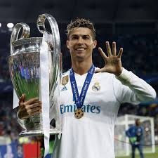

Who is the best athlete of all time?

In todays day and age there are many athletes ranging
from many sports known as the best athletes of their sports
but who can be said to the best athlete of all of them, could it be
LeBron James of basketball, Lionel Messi of Football  , Micheal Phelps of swimming or maybe
Cristiano Ronaldo of Football, we can never know for sure as all these sports are
very different from each other but all we can do is to debate as to who
has the best chances to be known as the greatest which means we have to
also go back in history.
, Micheal Phelps of swimming or maybe
Cristiano Ronaldo of Football, we can never know for sure as all these sports are
very different from each other but all we can do is to debate as to who
has the best chances to be known as the greatest which means we have to
also go back in history.
Another way to be sure as to who to regard as the greatest, is comparision
of each athlete of their respective sport to another athlete in a different sport
that has similar qualities or backstories to each other. An example of that
comparision is LeBron James and Lionel Messi, both athletes rose to stardom at very young age
with exceptional talent that most people say was gifted from God, both are gifted
and naturally born-leaders with a great scoring-record, possibly the best scorers
of their sports while being the best playmakers and they are both extremely
humble and very dominant in their respective sports especially in their primes with most teams
creating a strong and tight defense that tries to stop their dominance
and of course that wouldn't work with their type of dominance.
both athletes rose to stardom at very young age
with exceptional talent that most people say was gifted from God, both are gifted
and naturally born-leaders with a great scoring-record, possibly the best scorers
of their sports while being the best playmakers and they are both extremely
humble and very dominant in their respective sports especially in their primes with most teams
creating a strong and tight defense that tries to stop their dominance
and of course that wouldn't work with their type of dominance.
With these little facts or points of mine we can never actually know who can be regarded as the
greatest of athletes but just debate on who can be considered as the
greatest.